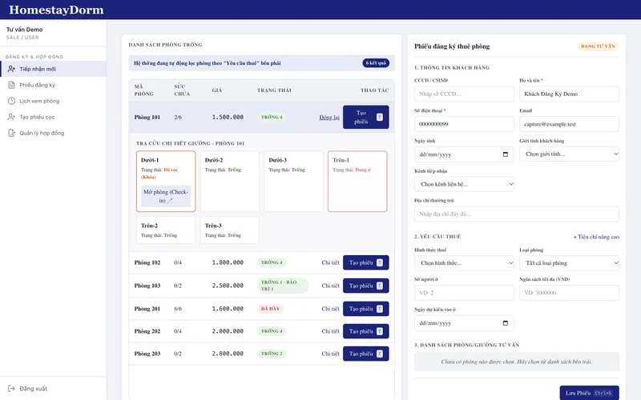
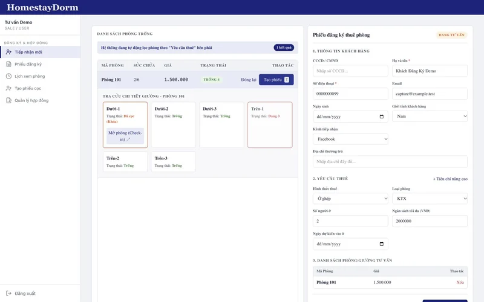
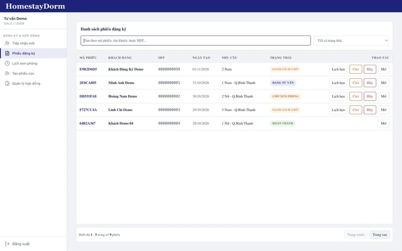
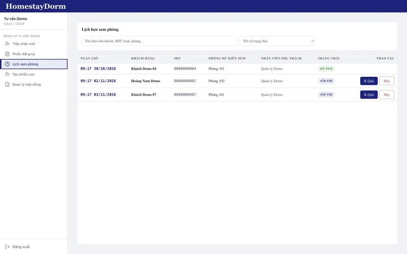

TEAM PROJECT / DATA MODELING
HomestayDormModel the business down to the bed.
Rental operations with explicit states and stable contracts.
At a glance
- Problem
- Track residents from inquiry and viewing to deposit, contract and move-out.
- My role
- Registration module, Prisma schema, UI/UX and requirements analysis in a team of four.
- Delivered
- Bed-level availability and a registration, viewing and deposit workflow.
- Key decision
- Track allocation at bed level and make registration transitions explicit.
THE CONTEXT
HomestayDorm / the problem
A multi-branch rental workflow needed to track each resident from initial inquiry through viewing, deposit, contract and move-out.
Bed-level allocation and a registration workflow connecting inquiries, appointments, deposits and contracts.








THE WORKFLOW
Follow the
business rule.
A simplified path through the system. Each step has an explicit responsibility.
- 01
Intake → Consult
The current intake creates a CONSULTING ticket with rental criteria and shortlisted rooms. The UI also exposes WAITING_VIEW, WAITLIST, COMPLETED and CANCELLED states; CONSULTING → WAITLIST was exercised in this capture.
- 02
Viewing
A viewing appointment is scheduled off the registration ticket.
- 03
Deposit → Contract
Deposit taken, then a contract is signed per bed.
- 04
Return
Move-out and reconciliation.
ENGINEERING DECISIONS
The interesting
part of the work.
The constraints, the trade-offs,
and how I approached them.
01Manage availability at bed granularity, not just per room.
+
Modeled Room → Bed (1-to-N), each bed with its own status (AVAILABLE / OCCUPIED / DEPOSITED / MAINTENANCE) and price — so a room can be rented whole or shared.
02If admin changes a bed's price later, old contracts must not change.
+
Price-snapshot pattern: ContractBedDetail stores priceAtSigning at signing time, fully decoupled from future price edits.
03Return-room has 10+ possible states.
+
A clearly-defined ReturnRoomTicketStatus enum, with every transition validated at the Server Action layer.
EVIDENCE & SCOPE
What was delivered.
What it means.
The Next.js build and TypeScript checks passed. In the running app, rental criteria narrowed six branch rooms to one; a registration with room 101 was saved, found by search and moved from CONSULTING to WAITLIST. PostgreSQL confirmed the criteria, creator, room relation and waitlist note.
What I take from this project
- Model inventory at the level where the business actually makes allocation decisions.
- A signed contract must preserve the accepted price even when the catalog changes.
Scope & limitations
- Team of four. My scope was the registration module, Prisma schema, UI/UX and requirements analysis.
- This case study describes project implementation, not measured commercial operation.
- Screenshots use an isolated local database with synthetic accounts, customers, room/bed states and appointments. Names, phone numbers and email addresses shown are demo data.
- Login, room filtering, registration creation/search and CONSULTING → WAITLIST were exercised. Appointment rows were seeded; no appointment email, deposit/payment, contract signing or move-out flow was executed. Contract price snapshots were inspected in source, not runtime-tested here.